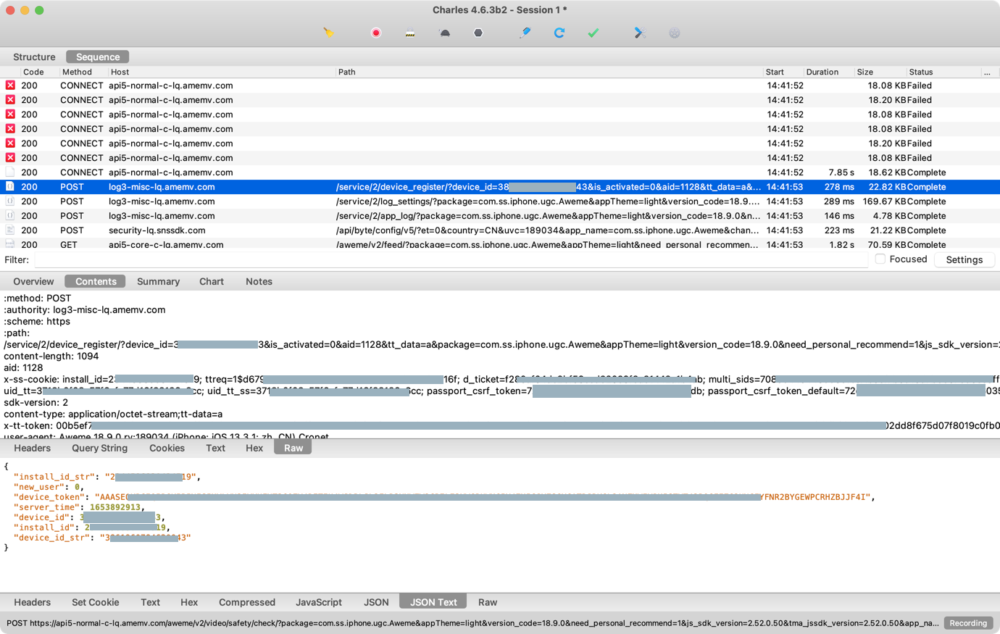

SSL证书绑定
- 背景
- iOS的app，多数和服务器端通信，也是基于常见
HTTP/HTTPS协议。 - 而iOS逆向中往往会，用抓包工具，比如
Charles去抓包分析你的网络请求。- 其中因为抓包可以直接看到明文数据而多数已不用
HTTP了。 - 而改用加密的
HTTPS，而抓包HTTPS，一般来说无法直接看到明文数据，只能看到加密后的乱码。 - 但是采用了根证书信任等手段，往往也可以抓包到
HTTPS的明文。 - 而最新的手段一般是：采用
证书绑定=SSL pinning，app内部会对于SSL的证书和本地的证书做绑定和校验，使得抓包工具比如Charles的证书，无法通过验证，从而导致无法抓包到HTTPS的明文。
- 其中因为抓包可以直接看到明文数据而多数已不用
- iOS的app，多数和服务器端通信，也是基于常见
- 而iOS防护的话，不希望被抓包，被看到HTTPS的明文，所以往往也会去采用：
证书绑定=SSL pinning- 而证书绑定中，更高级和更严格一点的手段是：
本地证书校验？
- 而证书绑定中，更高级和更严格一点的手段是：
举例
抖音
比如抖音内部就做了证书校验
绕过抖音的证书绑定校验
想要逆向，绕过抖音的证书绑定校验话，可以通过写hook代码绕过证书校验，即可实现抓包HTTPS看到明文数据。
具体步骤：
之前已给此处iPhone7搭建过Charles抓包环境：
- 已安装过Charles的根证书：charles-ssl-proxying-certificate.cer
- 且已信任过
此处只需要去：
把Charles的SSL根证书放入iPhone中对应的的位置，比如：
/Library/PreferenceLoader/Preferences/charles/charles-ssl-proxying-certificate.cer
然后再去写hook代码：
/*==============================================================================
Hook: Charles cert -> bypass https capture
==============================================================================*/
// to fix Charles capture https show Unknown issue
// https://bbs.pediy.com/thread-270700.htm
// https://iosre.com/t/topic/20202/46
#define CHARLES_CERT_FILE @"/Library/PreferenceLoader/Preferences/charles/charles-ssl-proxying-certificate.cer"
bool cfgHookEnable_aweme = true;
%hook TTNetworkManagerChromium
- (NSArray *)ServerCertificate {
iosLogDebug("%s", "");
NSArray* serverCertList = %orig();
iosLogDebug("serverCertList=%{public}@", serverCertList);
//// NSString *serverCertListStr = [NSArray nsStrListToStr:serverCertList isSortList:FALSE isAddIndexPrefix:TRUE];
// NSString *serverCertListStr = [CrifanLibHookiOS nsStrListToStr:serverCertList isSortList:FALSE isAddIndexPrefix:TRUE];
// iosLogInfo("serverCertListStr=%{public}@", serverCertListStr);
//
//// return nil;
// return serverCertList;
NSMutableArray* newCertList = [NSMutableArray arrayWithArray: serverCertList];
iosLogDebug("newCertList=%{public}@, newCertList.count=%{public}lu", newCertList, [newCertList count]);
if (cfgHookEnable_aweme) {
NSString *certResourcePath = CHARLES_CERT_FILE;
iosLogDebug("certResourcePath=%{public}@", certResourcePath);
NSFileManager *defaultManager = [NSFileManager defaultManager];
BOOL isExistedCert = [defaultManager fileExistsAtPath: certResourcePath];
iosLogInfo("isExistedCert=%s", boolToStr(isExistedCert));
if (isExistedCert) {
NSData *certP12Data = [NSData dataWithContentsOfFile: certResourcePath];
iosLogDebug("certP12Data=%{public}@", certP12Data);
[newCertList addObject: certP12Data];
iosLogDebug("newCertList=%{public}@, newCertList.count=%{public}lu", newCertList, [newCertList count]);
}
}
NSMutableArray* retNewCertList = [newCertList copy];
iosLogDebug("retNewCertList=%{public}@", retNewCertList);
return retNewCertList;
}
%end
再去Charles做好基本的代理配置：
- Charles中开启代理
- iPhone中使用Mac中的Charles代理
即可顺利实现iPhone7中抖音的https的抓包，看到https的明文了：

- 注：此处代码只对当时的版本：抖音
v18.9有效 -》 目前最新版本抖音，此代码已无效。